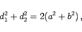
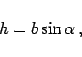
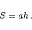

Parallelogramm wird ein Viereck genannt, das die folgenden Haupteigenschaften besitzt:
Bei einem Viereck folgen aus dem Vorhandensein einer dieser Eigenschaften oder aus der Gleichheit und Parallelität eines Paares gegenüberliegender Seiten alle anderen Eigenschaften.
Für den Zusammenhang zwischen Diagonalen, Seiten, Höhe und für den Flächeninhalt gilt:
|  | (3.20) |
|  | (3.21) |
|  | (3.22) |